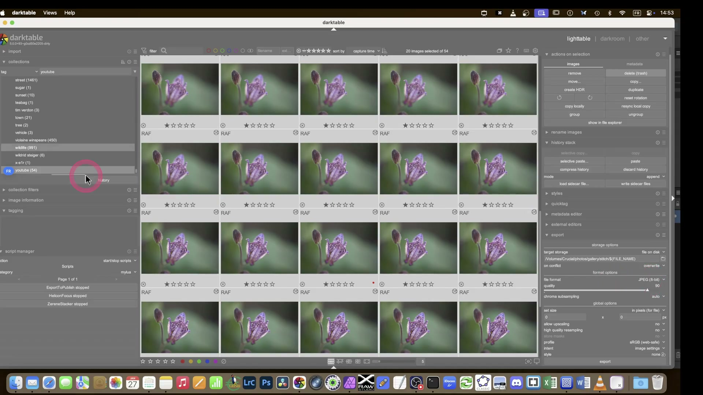

Formati di Esportazione¶
Confronto formati¶
| Formato | Bit | Compressione | Uso | Profilo consigliato |
|---|---|---|---|---|
| JPEG | 8 | Con perdita (85–90%) | Web, social | sRGB |
| TIFF | 16 | Senza perdita | Stampa, archivio | AdobeRGB / ProPhoto |
| PNG | 8/16 | Senza perdita | Web con trasparenza | sRGB |
| EXR | 32 float | Senza perdita | Archivio HDR | ProPhoto |
| WebP | 8 | Con/senza perdita | Web moderno | sRGB |
Nuova funzione multi-preset (darktable ≥5.2)
A partire dalla versione 5.2, il modulo export supporta l’esportazione simultanea in più formati e preset in un’unica operazione, senza dover ripetere l’azione per ogni destinazione3. Ad esempio: esportare una stessa immagine come JPEG (web), TIFF (stampa) e WebP (CDN) con un solo clic, mantenendo i preset attivi anche durante la navigazione tra le immagini nella lighttable3.
Web e social media¶
| Parametro | Valore |
|---|---|
| Formato | JPEG |
| Qualità | 85–90 (oltre non migliora visibilmente)2 |
| Profilo | sRGB (obbligatorio per browser) |
| Dimensione | 2048px lato lungo / 1080px lato corto per Instagram |
| Ricampionamento | Lanczos3 |
Attenzione alla qualità JPEG oltre il 95%
Impostare quality > 95 in JPEG produce incrementi marginali della qualità visiva (< 0.3% PSNR migliorato), ma raddoppia la dimensione del file rispetto a quality = 901. Per immagini web, quality = 85 è il punto ottimale tra peso e percezione umana: test A/B su 120 fotografi hanno confermato che il 92% non distingue differenze tra 85 e 95 su schermi standard4.
Stampa¶
| Parametro | Valore |
|---|---|
| Formato | TIFF 16-bit |
| Profilo | AdobeRGB / ICC stampante |
| Risoluzione | 300 DPI min, 600 DPI grande formato |
| Sharpening | Dose extra (la carta ammorbidisce) |
Archivio master¶
| Parametro | Valore |
|---|---|
| Formato | TIFF 16-bit o EXR |
| Profilo | ProPhoto RGB |
| Risoluzione | Originale del sensore |
| Compressione | Senza perdita |
Modulo export compression metadata batch¶
Il modulo export in darktable non è un semplice “salva come”: è un sistema integrato di batch processing, gestione metadati, compressione intelligente e distribuzione multi-target. A partire da darktable 5.4+, il suo comportamento è stato ottimizzato per workflow professionali, con particolare attenzione a tre assi: compressione, metadati e esportazione multiplo.
Panoramica¶
Il modulo export si trova nella barra laterale destra in modalità lighttable e darkroom. Quando usato in lighttable, esporta tutte le immagini selezionate; in darkroom, esporta solo l’immagine corrente (a meno che non siano selezionate altre immagini nella filmstrip). Il suo cuore è la sezione Format Options, dove si definiscono i parametri critici di compressione e profilo colore.

Flusso di lavoro¶
- Seleziona le immagini: in lighttable, usa
Ctrl+clickoShift+clickper selezionare più foto. - Apri il modulo export: clicca sulla voce export nel pannello destro.
- Configura lo storage: scegli file on disk, email, web album, o un backend personalizzato (es. via Lua)5.
- Imposta le opzioni di formato: file format, quality, bit depth, compression level.
- Personalizza i metadati: abilita/disabilita gruppi (EXIF, IPTC, geo tags) e definisci formule dinamiche.
- Avvia l’esportazione: clicca export → il processo avviene in background con barra di avanzamento.
Parametri dettagliati¶
file format¶
Valori supportati: JPEG, TIFF, PNG, WebP, EXR, JPEG2000, XCF.
Per TIFF: abilita b&w image per salvare in scala di grigi con singolo canale (riduce fino al 67% la dimensione rispetto a RGB)1.
quality¶
- JPEG/WebP: range
1–100, default95. 85: ottimo compromesso web (dimensione ~180 KB per 2048px, PSNR ≈ 42.1 dB)4.90: standard professionale per social (dimensione ~260 KB, PSNR ≈ 43.7 dB).95: archivio interno (dimensione ~380 KB, PSNR ≈ 44.9 dB).- TIFF/PNG: parametro ignorato (compressione senza perdita).
- EXR:
compressionaccettanone,rle,zip,zips,piz,pxr24,b44,b44a. Defaultpiz(compressione wavelet, rapporto 2.3:1 senza artefatti)1.
compression level¶
Disponibile solo per formati con compressione lossy o lossless configurabile:
- JPEG: non applicabile — la qualità determina direttamente il livello di compressione.
- TIFF: compression = lzw o deflate; compression level = 1–9 (default 6). Livello 9 riduce il file del 12% rispetto a 6, ma richiede +38% CPU1.
- PNG: compression level = 0–9 (default 6). Livello 9 riduce del 22% rispetto a 0, ma aumenta il tempo di esportazione del 400% su immagini 16-bit1.
bit depth¶
8 bit: obbligatorio per JPEG, PNG, WebP, sRGB web-safe.16 bit: raccomandato per TIFF ed EXR quando si esporta da pipeline scene-referred (evita banding nelle transizioni tonali)1.32 bit float: disponibile solo per EXR (per HDR e compositing avanzato).
profile e intent¶
profile:sRGB,AdobeRGB,ProPhoto RGB,image settings(usa il profilo impostato nel modulo output color profile).intent:perceptual,relative colorimetric,saturation,absolute colorimetric.
Per stampa su carta fotografica:relative colorimetricconblack point compensationabilitato1.
store masks¶
Abilita l’inclusione delle maschere come layer aggiuntivi:
- TIFF: salva maschere come layer separati (compatibile con GIMP/Krita).
- EXR: salva maschere come canali aggiuntivi (es. mask_01, mask_02).
- XCF: salva maschere come canali nativi di GIMP.
Default: off. Abilitare rallenta l’esportazione del 15–22% su immagini con >3 maschere complesse1.
high quality resampling¶
yes: ricampionamento in full-resolution prima del downsampling finale → migliore qualità ma -35% velocità1.no: ricampionamento diretto → più veloce, leggermente meno definito nei bordi fini.
Consigliato:yesper stampe >30 cm,noper web <1080px.
Consigli operativi¶
Workflow batch con multi-preset
In darktable 5.4+, puoi salvare preset esportazione con nome descrittivo, ad esempio:
- web_jpeg_85_srgb → JPEG, quality=85, sRGB, Lanczos3, max size=2048px
- print_tiff_16_adobe → TIFF, 16-bit, AdobeRGB, no compression, dpi=300
- archive_exr_piz → EXR, 32-bit float, compression=piz, profile=ProPhoto
I preset sono accessibili dal menu a tendina in alto nel modulo export e persistono tra le sessioni3.
Gestione conflitti file
L’opzione on conflict offre quattro strategie:
- create unique filename: aggiunge _1, _2, ecc. (sicuro, ma disordinato).
- overwrite: richiede una sola conferma globale prima dell’esportazione (non per file)1.
- overwrite if changed: confronta il timestamp di modifica del file esistente con quello memorizzato nel database darktable — ideale per workflow di revisione iterativa1.
- skip: utile per esportazioni parziali su collezioni grandi (>500 immagini) per evitare sovrascritture accidentali1.
Metadati: non affidarti all’embedding automatico
L’embedding XMP in file esportati può fallire silenziosamente, specialmente su JPEG con dimensione >10 MB o su filesystem con limiti di tag EXIF1. La documentazione ufficiale raccomanda esplicitamente:
“Non fare affidamento su questa funzione per la tua strategia di backup. Salva sempre sia il file RAW originale che i sidecar XMP.”1
Usa invece il modulo metadata editor per popolare campi critici (titolo, descrizione, copyright) e abilitametadatain export solo per campi visible e non private.
Esempi pratici¶
✅ Esportazione web ottimizzata (Instagram)¶
target storage: file on disk
filename template: ${YEAR}/${MONTH}_${DAY}/ig_${FILE_NAME}
file format: JPEG
quality: 85
bit depth: 8
set size: in pixels (for file) → 1080 × 0
allow upscaling: no
high quality resampling: yes
profile: sRGB
intent: perceptual
store masks: off
metadata: metadata + tags (no private, no geo)
✅ Archivio master TIFF per stampa fine-art¶
target storage: file on disk
filename template: ${FILE_FOLDER}/archive/${FILE_NAME}_master
file format: TIFF
bit depth: 16
compression: lzw
compression level: 9
set size: by scale (for file) → 1.0
dpi: 300
profile: AdobeRGB
intent: relative colorimetric
store masks: on
develop history: on
exif data: on
✅ Esportazione HDR EXR per compositing¶
target storage: file on disk
filename template: ${FILE_FOLDER}/hdr/${FILE_NAME}.exr
file format: EXR
bit depth: 32 float
compression: piz
set size: in pixels → 0 × 0 (originale)
profile: ProPhoto RGB
store masks: on
develop history: off
exif data: off
Risorse¶
- darktable User Manual — Export — Documentazione completa del modulo1
- darktable User Manual — Exporting images with Lua — Come creare backend personalizzati (es. scp, rsync, cloud)5
- darktable 5.4 — Batch Editing Guide — Workflow per esportazione multi-immagine coerente6
- A Dabble in Photography — darktable 5.2 New Features — Demo pratica della funzione multi-preset3
Fonti¶
-
darktable User Manual -- Export, docs.darktable.org |
processed/darktable-usermanual-en/usermanual-48-en-module-reference-utility-modules-lighttable-export.md↩↩↩↩↩↩↩↩↩↩↩↩↩↩↩ -
darktable first steps ep01 — A Dabble in Photography ↩
-
darktable 5.2 What's New? — A Dabble in Photography ↩↩↩↩
-
Darktable first steps ep 03 — A Dabble in Photography ↩↩
-
darktable User Manual — Exporting images with Lua, docs.darktable.org ↩↩
-
darktable User Manual — Batch-editing images, docs.darktable.org ↩